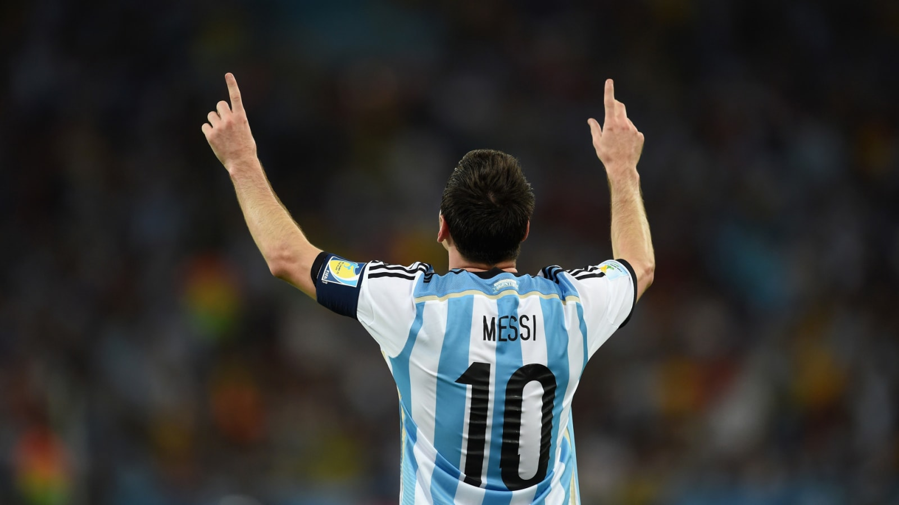

I'm a FAN of Messi
Overcoming obstacles since his childhood
Growing in the streets of Rosario, Argentina, Messi was undoubtedly supremely gifted and
everyone
realised that since the moment he touched a football.
However, he just didn’t become the superstar he is by being
supremely gifted he had to overcome countless obstacles, the biggest of which was the growth
hormone
deficiency that he suffered from. At a tender age Leo was diagnosed to have been suffering from
a
growth
hormone deficiency which not only put his footballing career in jeopardy but also threatened to
shunt
his physical development.
Despite the growth hormone injections Messi could only reach a height of 1.7 metres, relatively
small
for a footballer Forced to develop his game according to his height, Messi worked on his close
control of the
ball and on the skills required to get out of tight spots making his height disadvantage work in
his
favour.
He didn’t just become one of the all time greats, he sacrificed, he pierced himself and had to
put
in hard
yards and the rest as they say… is history.